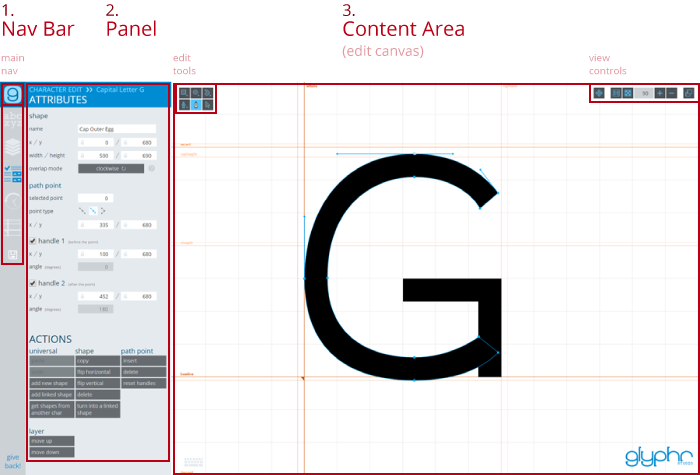
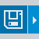

|
Help & Documentation |
Overviewwelcome starting a new project navigation and layout file formats updates unicodeEditingshape editing canvas tools keyboard shortcutsPanelschooser shapes attributes glyph shape path point component instance edit history guidesPagesglyph edit components ligatures kerning test drive font settings project settings import svg export font about |
Navigation and LayoutNav BarThe Glyphr Studio work space has three vertical areas: from left to right, the Navigation Bar, the Panel, and the Main Content area. The Glyphr Studio icon in the upper left hand corner is the main navigation. Click on the icon to show a list of all the Pages in Glyphr Studio. You can read about all the different pages in the help documentation. Selecting an icon in the Nav Bar will update the Panel and the Main Content areas. Each page has a different set of Nav Bar and Panel options.  The bottom-most icon in the Navigation Bar is a save icon - it does not actually navigate anywhere, but instead is just an omnipresent shortcut to save your Glyphr Project. When there are changes that have not been saved, the save icon becomes slightly highlighted, and a diamond icon ❖ will be added to the browser title. PanelThe Panel shows details from whatever is selected in the Nav Bar. This is where you access things like Attributes, Layers, Glyph Selection, and more. You can read more about all the different panels in the help documentation. Main ContentThis is the main interaction area. For glyph editing, this is a big graphic space called the Edit Canvas. You can read more about the Edit Canvas in the 'Editing' section of the help documentation. Some pages, like Font Settings and Project Settings, the Main Content area is just a page of options. On some of these pages, the Panel doesn't have any specific options, other than a list of all the Pages for navigation. |